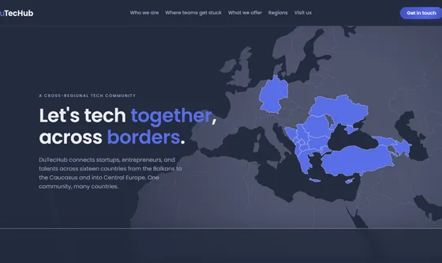
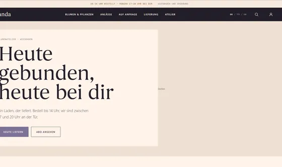
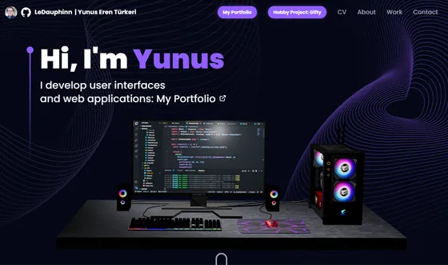

Crafting digital experiences from concept to code.
Built at DuTACS
Corporate travel management · IATA-certified TMC
Luxury resort · Mediterranean destination
Client sites & templates

Cross-regional tech community hub

E-commerce template · flower shop in Wiesbaden
Personal experiments
Personalized gift discovery app

Personal site & creative experiments